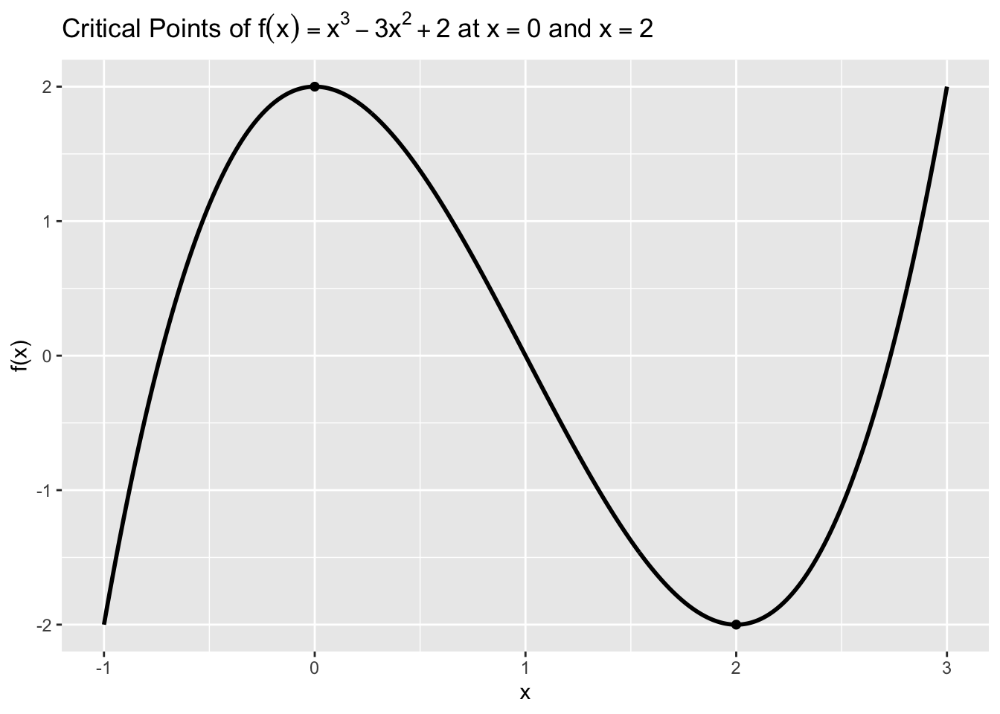

This lesson connects derivatives to optimization—finding inputs that maximize or minimize an output. In one dimension, critical points occur where the derivative is zero or undefined; the second derivative helps us classify them. In data science, we often minimize a loss function (such as mean squared error) to fit a model; the condition “derivative equals zero” gives us the familiar closed-form formulas in simple cases.
We’ll keep things concrete with three themes: (1) locating and classifying extrema in a single-variable function, (2) understanding the second derivative test, and (3) minimizing mean squared error to fit a simple linear model.
13.2 1. Critical Points: Where Optimization Starts
A critical point is a point \(x=c\) where \(f'(c)=0\) or \(f'(c)\) does not exist. Candidates for maxima or minima must be critical points (or endpoints of an interval).
13.2.1 1.1 Example: A Non-Convex Function
Consider \[
f(x) = x^3 - 3x^2 + 2.
\] Then \(f'(x) = 3x^2 - 6x = 3x(x-2)\) (critical points at \(x=0\) and \(x=2\)). The second derivative is \(f''(x) = 6x - 6\).
The code below plots \(f(x)\), marks the critical points, and draws a horizontal reference at \(y=0\) for context.
Code
# Purpose: Visualize f(x) = x^3 - 3x^2 + 2, mark critical points where f'(x)=0, and see local max/min.# We annotate points at x=0 and x=2 and add a horizontal reference line at y=0.library(ggplot2)library(latex2exp)# Define functionf <-function(x) x^3-3*x^2+2# Grid for plottingx <-seq(-1, 3, by =0.01)df <-data.frame(x = x, y =f(x))# Critical pointsxc <-c(0, 2)yc <-f(xc)ggplot(df, aes(x, y)) +geom_line(color ="black", linewidth =1) +annotate("hline", yintercept =0, linetype ="dashed", color ="black", linewidth =1) +annotate("point", x = xc[1], y = yc[1], shape =16, size =2, color ="black") +annotate("point", x = xc[2], y = yc[2], shape =16, size =2, color ="black") +labs(title =TeX("Critical Points of $f(x)=x^3-3x^2+2$ at $x=0$ and $x=2$"),x ="x", y ="f(x)" )
Warning: `geom` must not be "hline".
ℹ Please use `geom_hline()` directly instead.

Key Insight: The curve rises, then falls, then rises again. Critical points at \(x=0\) and \(x=2\) are where the slope switches sign—prime candidates for local extrema.
13.3 2. Classifying Extrema: Second Derivative Test
If \(f'(c)=0\) and \(f''(c) > 0\), \(f\) has a local minimum at \(c\). If \(f''(c) < 0\), \(f\) has a local maximum at \(c\). If \(f''(c)=0\), the test is inconclusive (check other methods).
13.3.1 2.1 Quick Check for the Example
For \(f(x)=x^3 - 3x^2 + 2\), we have \(f''(x)=6x-6\). Thus \(f''(0)=-6<0\) (local maximum at \(x=0\)) and \(f''(2)=6>0\) (local minimum at \(x=2\)).
The code below computes these values and displays a tiny table for clarity.
Code
# Purpose: Compute second-derivative values at critical points to classify maxima/minima.# Second derivativef2 <-function(x) 6*x -6crit <-data.frame(x =c(0, 2),`f''(x)`=f2(c(0, 2)),Classification =c("Local maximum (f''<0)", "Local minimum (f''>0)"))crit
x f...x. Classification
1 0 -6 Local maximum (f''<0)
2 2 6 Local minimum (f''>0)
Key Insight: The sign of the second derivative at a critical point distinguishes peaks (negative) from valleys (positive).
13.4 3. Optimization with Data: Minimizing Mean Squared Error (MSE)
To fit a simple linear model \(\hat{y} = m x + b\) to data, we often minimize the mean squared error \[
L(m,b) = \frac{1}{n} \sum_{i=1}^n \big(y_i - (m x_i + b)\big)^2.
\] Setting partial derivatives to zero gives the normal equations, whose solution is the familiar \[
m^* = \frac{\operatorname{Cov}(x,y)}{\operatorname{Var}(x)}, \qquad
b^* = \bar{y} - m^*\,\bar{x}.
\] These come directly from \(\frac{\partial L}{\partial m}=0\) and \(\frac{\partial L}{\partial b}=0\).
13.4.1 3.1 Worked Example and Verification in R
We simulate a dataset and compute \((m^*, b^*)\) from the closed-form formulas above. We verify by comparing to lm(y ~ x) and by checking that the gradient at \((m^*,b^*)\) is essentially zero.
Code
# Purpose: Fit a line by minimizing MSE using calculus (closed-form), verify with lm(), and check zero-gradient.# We compute m* = Cov(x,y)/Var(x) and b* = mean(y) - m* mean(x). Then we verify with lm and a gradient check.library(ggplot2)library(latex2exp)set.seed(123)n <-60x <-runif(n, 0, 10)y <-1.5* x +4+rnorm(n, sd =2) # true slope 1.5, intercept 4# Closed-form estimates from normal equationsmx <-mean(x); my <-mean(y)m_star <-cov(x, y) /var(x)b_star <- my - m_star * mx# Verify with lm (ordinary least squares)fit <-lm(y ~ x)coef_lm <-coef(fit)# Gradient of L(m,b) = mean( (y - (m x + b))^2 )# dL/dm = -2/n * sum x_i (y_i - (m x_i + b))# dL/db = -2/n * sum (y_i - (m x_i + b))dL_dm <-function(m, b) (-2/length(y)) *sum(x * (y - (m * x + b)))dL_db <-function(m, b) (-2/length(y)) *sum(y - (m * x + b))grad_at_star <-c(dL_dm(m_star, b_star), dL_db(m_star, b_star))# Plot data with fitted line (closed-form solution)df <-data.frame(x = x, y = y)ggplot(df, aes(x, y)) +geom_point(color ="black", size =1) +geom_abline(slope = m_star, intercept = b_star, color ="black", linewidth =1) +labs(title =TeX("OLS by Calculus: Data with Fitted Line $\\hat{y}=m^* x + b^*$"),x ="x", y ="y" )
Key Insight: The calculus solution (closed-form) matches lm() and makes the gradient nearly zero at \((m^*,b^*)\). In practice, many models lack closed forms; we then search for parameters that drive the gradient toward zero (next lecture).
13.5 4. Newton’s Method (Preview)
A powerful one-dimensional method for locating critical points solves \(f'(x)=0\) by iterating \[
x_{k+1} = x_k - \frac{f'(x_k)}{f''(x_k)}.
\] When \(f\) is well-behaved and you start near a solution, this can converge very quickly.
The code below applies Newton’s method to our earlier \(f(x) = x^3 - 3x^2 + 2\) starting near the local minimum at \(x=2\).
Code
# Purpose: Demonstrate Newton's method to solve f'(x)=0 for f(x)=x^3 - 3x^2 + 2.# We start near x=2 and show a few iterations approaching the minimizer.# Derivativesfp <-function(x) 3*x^2-6*xfpp <-function(x) 6*x -6# Newton iterationsxk <-1.8iters <-6xs <-numeric(iters +1)xs[1] <- xkfor (k in1:iters) { xk <- xk -fp(xk) /fpp(xk) xs[k +1] <- xk}data.frame(Iteration =0:iters, x = xs)
Key Insight: Newton’s updates home in on a nearby critical point by “using” curvature information (\(f''\)). In higher dimensions, the same idea generalizes with gradients and Hessians.
13.6 Practice Problems
For \(f(x)=x^3 - 3x^2 + 2\), compute \(f'(x)\) and \(f''(x)\), and classify the critical points. Verify with a quick plot.
Show that setting \(\frac{\partial L}{\partial m}=0\) and \(\frac{\partial L}{\partial b}=0\) for \(L(m,b) = \frac{1}{n} \sum (y_i - (m x_i + b))^2\) leads to the closed-form OLS formulas for \(m^*\) and \(b^*\).
For a dataset of your choice, compute \((m^*, b^*)\) using the closed-form OLS formulas and compare to lm(y ~ x). Plot the data and both fitted lines if they differ.
Apply two or three Newton iterations to \(f(x)=x^3 - 3x^2 + 2\) starting from \(x=0.2\) and from \(x=2.5\). Where do they converge? Why might Newton’s method behave differently from different starting points?
13.7 In this lesson, you learned to
Identify critical points and use the second derivative test to classify them.
Apply derivatives to minimize mean squared error and fit a simple linear model.
Verify analytic solutions with numeric checks and plots.
Understand the intuition behind Newton’s method as a fast local optimizer.
13.8 Coming Up
Next time we put optimization to work algorithmically with the Gradient Descent method—choosing step sizes, monitoring convergence, and avoiding common pitfalls on real data.